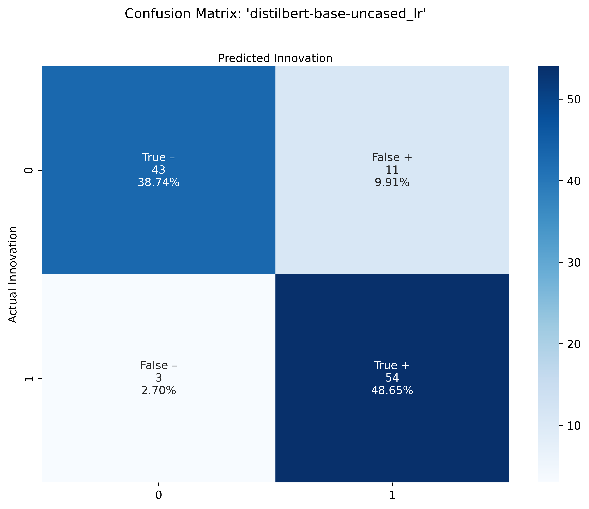
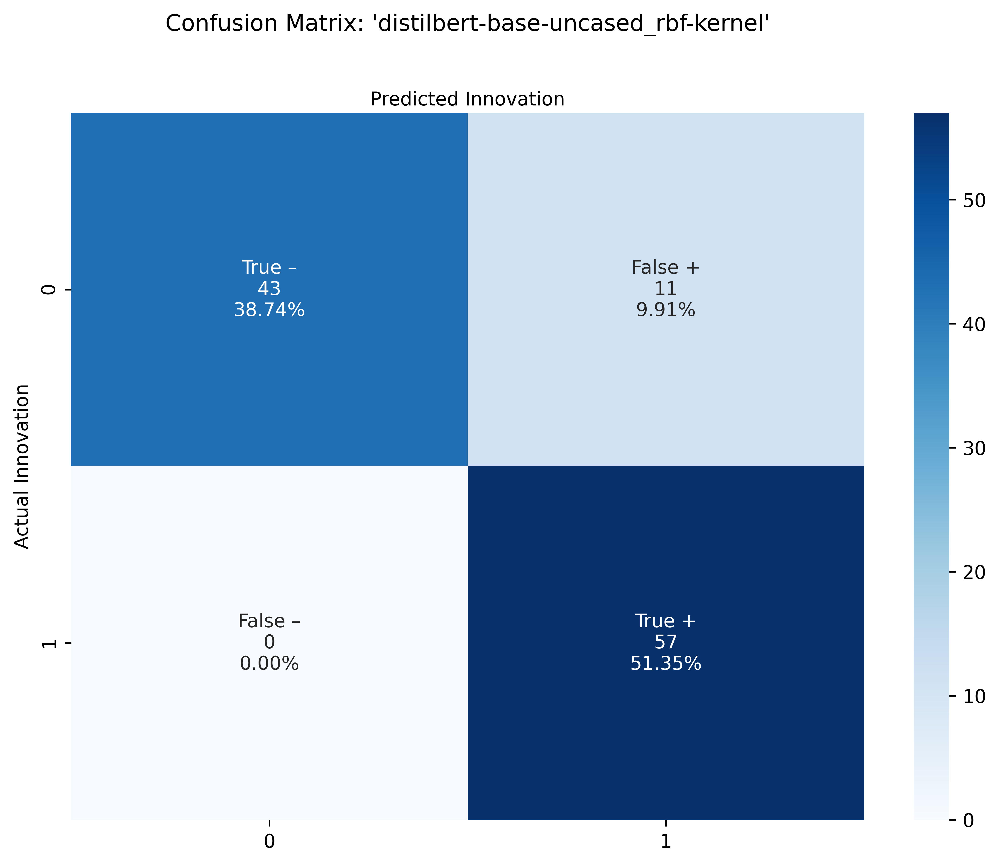
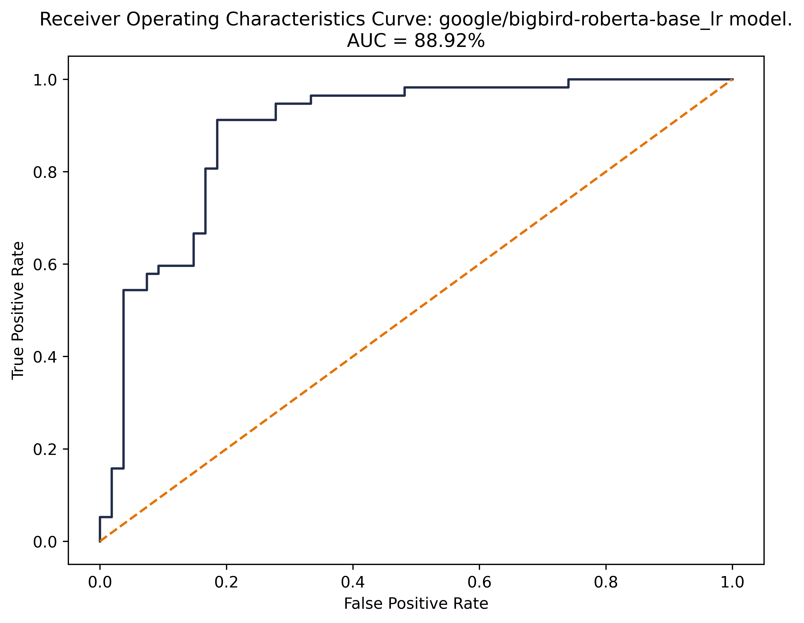

Results
Evaluating Performance
When evaluating model performance there are a number of high-level and granular metrics to investigate to best understand how the model performs on new data. Here we consider the following:
- Accuracy: Accuracy is the fraction of predictions that our model got right.
- F1 score: The F1 score is another measure of a model’s accuracy, calculated as the harmonic mean of the model's precision and recall. The highest possible value of an F-score is 1.0, indicating perfect precision and recall, and the lowest possible value is 0.
To better illustrate model performance, we make use of ROC curves and confusion matrices. ROC curve plots the performance of a model in terms of the error rate over increasing probability thresholds. The area under the curve (AUC) associated with an ROC curve is used as a measure of accuracy for a model. The straight diagonal line indicates a 50/50 guess and is used here as a baseline for performance.
A confusion matrix provides insight with regards to exactly how each model classified articles correctly and incorrectly, by displaying predictions by their type:
- True negatives (TN): articles without mention of innovation that the algorithm correctly predicted as a "No"
- True Positives (TP): articles mentioning new, available products that the algorithm correctly predicted as a "Yes"
- False positives (FP): articles without mention of innovation that the algorithm incorrectly predicted as a "Yes" (also known as Type I error)
- False negatives (FN): articles mentioning new, available products that the algorithm incorrectly predicted as a "No" (also known as Type II error)
Comparing results for BERT-transformed classifiers
| Model | Accuracy | Precision | Recall | F1 | Cross-Validation Score |
|---|---|---|---|---|---|
| distilbert-base-uncased_logistic regression | 87.39 | 83.08 | 94.74 | 88.52 | 82.47 |
| distilbert-base-uncased_SVM_rbf-kernel | 90.09 | 83.82 | 100 | 91.2 | 85.97 |
| google/bigbird-roberta-base_logistic regression | 85.59 | 82.54 | 91.23 | 86.67 | 81.63 |
As shown above, the best performing model is the DistilBERT model paired with a Support Vector Machines classifier. This model demonstrates the highest accuracy across as well as the highest F1 score across models. When cross-validation is used to further test performance, we find this model also scores best with robust testing.
There are some interesting results in our three models' confusion matrices. Firstly, we observe that each model's TN and FP counts are identical. For the TP and FN counts, we observe the following ranking:
- DistilBERT-SVM shows best TP-FN tradeoff with 0 FNs
- DistilBERT-LR shows next best tradeoff with 3 FNs
- Big Bird RoBERTA-LR shows worst performance in terms of TP-FN trade off with 5 FNs
Looking at the distilbert SVM confusion matrix, we see improvement from the first distilbert logistic regression confusion matrix, as 3 FN’s move into TP’s.
And lastly, the Big Bird Roberta Logistic Regression confusion matrix seems to perform worse, compared to the first distilbert logistic regression confusion matrix, as it shows an extra 2 FN’s that seem to move from the TP’s.
ROC Curves
Confusion Matrices
Distilbert LR


Distilbert SVM


Big Bird Roberta LR


NER Training Set Results
- dslim results
- expecting that we have some overall accuracy number - compare the # companies we manually labeled to the companies identified by NER
- if we had tagged Apple, MCRSFT, is there a match for those based on NER?
2017 Set Results
classification prediction histogram of pred_prob (highlight green for > 0.5)
- NER - top 10 innovators
- can we add %ages to the bars here for innovative mentions/all mentions

- visualization of co-mentions of innovators
Conclusions
In conclusion, promising results in terms of leverage state of the art language represetntation models to identify articles relevant to innovation. We have successffuly constructed a pipeline that classifies articles and extracts innovator companies with high accuracy and reasonable confidence. As a result of this work, we/NSF can now...
Drawbacks/Weaknesses:
- susceptible to bias e.g., because of large companies with large PR budgets overrepresented in the data
- susceptible to noise e.g., financial news, irrelevant news
- scaling is a challenge - need for labeled data, crossing sectors is difficult, crossing time may be more complex as well
Next steps, to refine this pipeline, extract product names, implement alt approaches e.g. Q&A, perform deduplication on company names